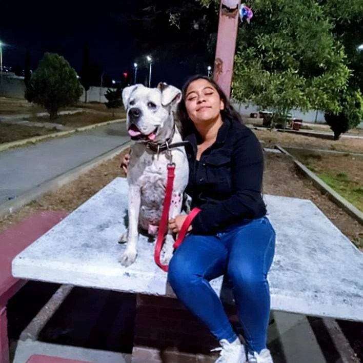

Originaria del Estado de México, soy pasante de la carrera de Ingeniería Geomática por la Facultad de Ingeniería de la UNAM.
Mi pasión por la tecnología surgió al descubrir el potencial de creación de mapas a partir de bases de datos geoespaciales durante mi formación académica. Actualmente, busco especializarme en visualización de datos geoespaciales, con énfasis en el desarrollo de mapas didácticos e interactivos que faciliten la comprensión y análisis de información espacial.